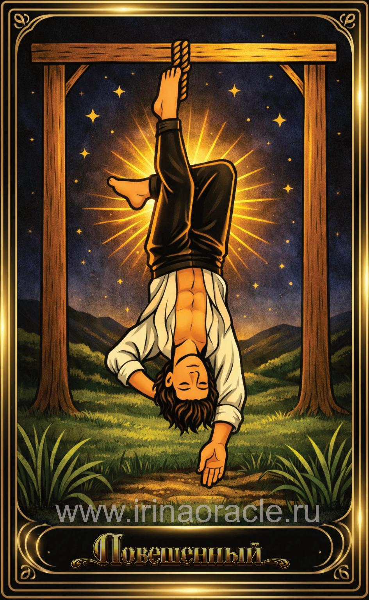

Повешенный — значение карты Таро
Повешенный — значение карты Таро

Повешенный — это карта паузы, переосмысления и нового взгляда на ситуацию. Она символизирует добровольную остановку, отказ от сопротивления и принятие того, что невозможно изменить прямо сейчас. Это момент, когда жизнь словно ставит на паузу, чтобы человек увидел истину под другим углом.
Общее значение
Повешенный указывает на необходимость остановиться и пересмотреть свои подходы. Это карта внутренней трансформации, смены перспективы и отказа от старых моделей поведения. Она говорит о том, что движение вперёд возможно только после переосмысления.
Иногда карта указывает на жертву — добровольную или вынужденную — ради будущего роста.
Любовь и отношения
В любви Повешенный говорит о паузе, ожидании или необходимости пересмотреть отношения. Это время, когда важно понять свои истинные чувства и мотивы. Иногда карта указывает на односторонние усилия или жертвенность.
В тени может проявляться зависимость, эмоциональная стагнация или страх отпустить ситуацию.
Работа и финансы
В работе Повешенный указывает на задержки, паузы, пересмотр планов или необходимость изменить подход. Это время, когда активные действия малоэффективны — важнее наблюдать и анализировать.
В финансах карта говорит о временной стагнации, но также о возможности увидеть новые пути, если изменить взгляд на ситуацию.
Здоровье
Повешенный указывает на необходимость отдыха, восстановления и пересмотра привычек. Иногда — на психосоматические процессы или влияние стресса.
Карта поддерживает практики расслабления, медитации и работы с дыханием.
Совет карты
Остановись. Посмотри на ситуацию под другим углом. Повешенный советует не торопиться, не сопротивляться процессам и позволить жизни самой показать следующий шаг.
Иногда лучший путь вперёд — это временная пауза.
Теневая сторона
В тени Повешенный проявляется как застой, апатия, избегание действий или жертвенность, которая не приносит пользы. Иногда — как ощущение, что человек «застрял» и не видит выхода.
Карта напоминает: пауза должна вести к осознанию, а не к бессилию.